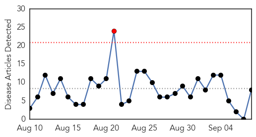
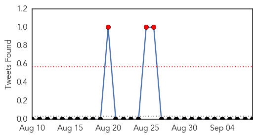
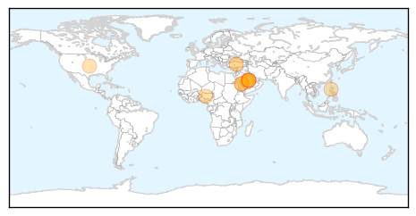

West Nile Virus
30-Day Web Trend
1 alerts, 0 warnings

30-Day Twitter Trend
1 alerts, 0 warnings

Article Locations

Article Confidences

Top Articles:
- 0.992
- Identity of North Carolina West Nile victim released
- 0.987
- Blood donor tests positive for West Nile Virus
- 0.963
- West Nile still posing threat
- 0.947
- Four new cases of West Nile virus in Mississippi bring total to 22
- 0.842
- Mosquito traps test positive for West Nile Virus in Nordonia Hills communities - News Leader
- 0.742
- 36. Charting the Course of a Globe-Trotting Pathogen
- 0.699
- Mississippi reaches 22 case of West Nile virus this year
- 0.669
- In Washington, West Nile virus makes a comeback
Top Tweets:
-
No tweets found for Sep 08, 2015
MERS
30-Day Web Trend
0 alerts, 1 warnings

30-Day Twitter Trend
7 alerts, 8 warnings

Article Locations
Article Confidences

Top Articles:
- 1.000
- Anxiety as cases of deadly MERS rise in Saudi Arabia
- 1.000
- Saudi, Jordan MERS cases rise as WHO gives outbreak details
- 0.992
- SCH urges Hajj pilgrims to take safety precautions
- 0.983
- MERS claims three lives in Saudi Arabia
- 0.976
- Health workers issue update on MERS outbreak in Jordan
- 0.972
- 7,700 camels carry MERS virus
- 0.962
- 2 Filipinos cleared of MERS-CoV, discharged from Riyadh hospital
- 0.928
- MERS developed as bio-weapon ‘plausible’
- 0.919
- H5N1: Saudi Arabia: 'Plausible' that MERS was developed as bio-weapon
- 0.792
- Refugees pose little health risk, says WHO
- 0.647
- DFA: Only 2 Pinoy nurses left with MERS-Cov
- 0.635
- Population movement is a challenge for refugees and migrants as well as for the receiving population - World
Top Tweets:
- 0.664
- AFD Blog `Saudi MOH Announces 3 Additional MERS Cases' MERS-CoV http://t.co/x39tYyaTtW
- 0.634
- AFD Blog `The Jordanian MERS Outbreak Continues To Expand' MERS-CoV http://t.co/SNtnb3cI8R